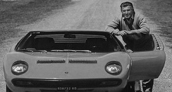
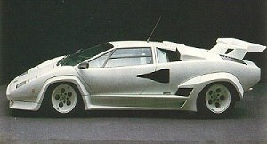
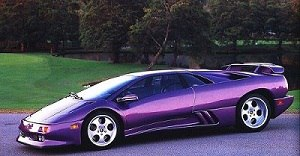
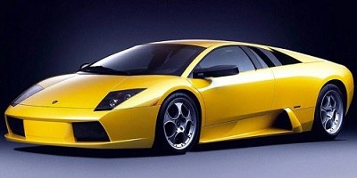
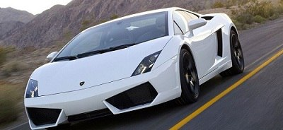
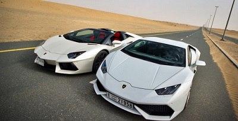

Покидая Италию англичане распродавали излишки не нужной им теперь техники – возвращать её в Великобританию было делом слишком уж напряжным. Предприимчивый молодой итальянец воспользовался этим. Так появилась небольшая компания по производству тракторов. В разоренной войной, но постепенно возрождающейся стране эта техника была весьма востребована. Первая же модель трактора оказалась очень простой по конструкции и надежной в эксплуатации, что и определило её успех. Это позволило молодой компании быстро встать на ноги.
Уже по прошествии десятка лет Ламборгини разбогател. Настолько, что смог позволить себе дорогой спортивный автомобиль, сделав выбор в пользу Ferrari. Однако, спортивный автомобиль разочаровал талантливого механика. Настолько, что в один прекрасный день Ламборгини отправился в офис компании, с намерением рассказать лично самому Энцо Ферарри свои размышления относительно того, как тот мог бы улучшить свои автомобили. Однако, в результате он столкнулся с банальным хамством и едкими фразами про то, что производитель тракторов не должен лезть в производство спорткаров. Ламборгини был взбешен. Тогда–то он и решил создать собственную модель спортивного автомобиля. Причем не просто для себя лично, но такую, что сможет бросить вызов Ferrari, как на трассе, так и на рынке. Так сказать, месть по-итальянски.
Ламборгини вернулся на фабрику, разобрал трансмиссию в своём Ferrari 250 GT и обнаружил, что производитель многих деталей тот же, что и в тракторах Lamborghini. На своих складах он нашёл подходящую замену, и после сборки проблема была решена. Ферруччо решил, что его автомобиль будет иметь двигатель V12, этот двигатель был также выбран по экономическим причинам. Ферруччо привлёк к своему проекту талантливого инженера Джотто Биццарини, владельца компании Bizzarrini, который до этого разрабатывал V12 для Ferrari. Прототип автомобиля Lamborghini 350 GTV был представлен общественности на автошоу в Турине в октябре 1963 года. В марте 1964 года был показан первый серийный автомобиль Lamborghini 350 GT. Продажи серийной версии были весьма успешными. Рождённый под знаком тельца, Ферруччо Ламборгини украсил автомобиль логотипом с изображением быка. Однако, Однако, не следует думать, что Ламборгини полностью переключился на скоростные автомобили, отказавшись от тракторов. Вовсе нет! Более того, именно трактора приносили ему основной доход и позволяли воплощать в жизнь самые смелые идеи.
Настоящий успех ждал компанию после появления модели Miura. Это был превосходный суперкар, появившийся в 1965 году. Он был исключительно популярен (по меркам автомобилей такого класса) – за год удавалось продавать порой более сотни штук, а завод Lamborghini работал на пределе своих возможностей

Lamborghini Miura была призвана стать супермоделью и произвести эффект разорвавшейся бомбы. В мире всех этих BMC, Sunbeam и Routemaster белая «мурчащая кошка» смотрелась совершенно необычайно еще и с левым рулем… Модель Miura, показанная в 1965 году, была оснащена 12-ти цилиндровым двигателем, расположенным за спиной водителя поперёк машины на специальной раме. Поперечное расположение применено в первых моделях Lamborghini, и всего третий раз за всю историю автомобилестроения. Это необычное решение вдохновило дизайнеров, придавших автомобилю необычную форму. В течение шести лет со дня представления первой модели, было продано 800 машин и по популярности они превзошли Ferrari. Как и любой суперкар, Miura абсолютно непрактична. Если положить багаж сзади, он «поджарится» под воздействием температуры двигателя. Еще одним показателем является цена, которую невозможно оправдать никакими доводами. Но когда жмешь на педаль газа, все недостатки блекнут и растворяются в реве 12-ти цилиндрового мотора. Она отлично выглядит. Прекрасно звучит. Обладает завидной мощью даже для современных автомобилей.
В 1971 году Lamborghini снова удивил мир прототипом новой революционной модели Lamborghini Countach. Хотя сам автомобиль начал производиться только тремя годами позже (в 1974), до этого времени он оставался в центре внимания на любом автошоу. Прототип имел новомодные тогда вертикально открывающиеся двери, задние воздухозаборники и мощный 4–литровый двигатель 
Однако в 1972 году у компании случился серьёзный кризис – был прерван контракт на поставку крупной партии тракторов в Южную Америку. Недостаток средств вынудил Ферруччо продать часть своей доли тракторного производства, которая была куплена компанией Fiat. В конечном счёте, всё тракторное производство перешло под владение Same Deutz–Fahr Group, которая и производит трактора Lamborghini по сегодняшний день. В течение семидесятых годов успешные продажи Lamborghini Countach поддерживали компанию на плаву. Вскоре автомобильное производство стало самодостаточным и прибыльным, но, тем не менее, Ламборгини продал свою долю компании швейцарским инвесторам — Жоржу-Анри Росетти (Georges-Henri Rossetti) и Рене Леймеру (René Leimer). Феруччо Ламборгини умер в 1993 году в возрасте 76 лет.
 В результате нефтяного кризиса 1970-х годов продажи спортивных автомобилей резко упали. Компания, в числе других, столкнулась с финансовыми проблемами, поставки запасных частей были сорваны, заказы на автомобили были распроданы на 2 года вперёд и покупатели были весьма недовольны таким сроком ожидания. Как результат, в 1978 году компания объявила себя банкротом. Итальянский суд был вынужден продать компанию. Она была куплена братьями Мимрам из Швейцарии. Покупка компании корпорацией Chrysler стала очередным сюрпризом. В это время велась работа над последователем Countach – Lamborghini Diablo. Значительные технические и финансовые ресурсы были вовлечены в модернизацию компании и выпускаемых автомобилей, и конечный результат стал очередным успехом для компании — модель Diablo очень быстро вывела компанию снова на мировой уровень.
 В 1994 году корпорация Chrysler из-за финансовых трудностей была вынуждена продать Lamborghini инвестиционной группе из Индонезии M’tec (Megatech) под руководством Томми Сухарто (Tommy Suharto). По той же самой причине (финансовые проблемы) компания в 1998 году снова поменяла владельца, на этот раз новым владельцем стала компания Audi AG. Новый владелец снова оказал большое влияние на дизайн выпускавшихся суперкаров, сегодняшних Lamborghini Murciélago. Как это принято у Lamborghini, название «Мурсье́лаго» пошло из корриды. По легенде, представленной компанией, во время боя в 1879 году на арене Кордовы легендарно известный бык по кличке Мурсьелаго остался стоять после 24 ударов мечом матадора. Потрясённый матадор сохранил жизнь быку, что является достаточно редким явлением. Позднее этот бык был приобретён селекционером Антонио Миурой и положил начало одной из пород боевых быков.Lamborghini разрабатывал Lamborghini Murciélago R-GT для участия в чемпионате FIA GT и 24 часа Ле-Мана. Наилучшие результаты всех этих соревнований — первое место (стартовал последним) в классе LMGT1 на трассе «Каталунья» в серии «Ле-Ман» 2009 г. (автомобиль российской команды «ИнтерПрогрессБанк СПАРТАК Рейсинг») и третье место (стартовал пятым) при открытии чемпионата FIA GT в Валенсии (автомобиль был выставлен командой Reiter Engineering).
 В 2003-м вышел более компактный Lamborghini Gallardo, который стал самой массовой моделью марки: за 11 лет производства было выпущено 2 903 автомобиля. В марте 2003 года на женевском автосалоне была представлена новая модель компании — купе Lamborghini Gallardo. Название автомобиля происходит от испанской породы боевых быков, которая была выведена скотоводом Франсиско Гайярдо в XVIII веке. Под капотом был установлен пятилитровый двигатель V10 мощностью в 500 лошадиных сил. Ускорение от 0 до 100 км/ч занимало 4,2 секунды, а максимальная скорость была равна 309 км/ч (192 мили/ч).
 За этим последовало появление ряда громких новинок марки, одной из которых был Lamborghini Aventador, сменивший Murciélago в 2011 году. Он получил 6,5–литровый 12–цилиндровый двигатель, развивающий 700 л.с. Максимальная скорость составляет 350 км/час, а разгон с 0 до 100 км/час — 2,9 секунды. В 2014 году представлена замена Gallardo – Lamborghini Huracán с 5,2–литровым 10–цилиндровым двигателем мощностью 610 л.с. Его максимальная скорость равняется 325 км/час. Официальное представительство Lamborghini в России открылось в 2012 году, когда компании Lamborghini Russia и Burevestnik Group заключили дилерское соглашение. В Москве открылся стенд Lamborghini Moscow, где можно было познакомиться со всем модельным рядом марки, заказать автомобиль, а также запчасти, аксессуары и эксклюзивную одежду. Позднее был открыт сервисный центр Lamborghini. Компания участвовала в гонках «Формулы–1» в 1989–1993 годах в качестве поставщика двигателей для команды Larrousse (1988—1990, 1992—1993), Lotus (1990), Ligier (1991) и Minardi (1992). В 1991 году автомобиль команды Modena, участвоваший в чемпионате, был полностью разработан и изготовлен компанией. В понедельник, 6 ноября 2017 года, на конференции EmTech в Кэмбридже компания Lamborghini представит "суперкар будущего", разработанный в сотрудничестве с Массачуссетским технологическим институтом. Подробностей о новинке на данный момент нет, однако ранее в Lamborghini подтвердили, что работают над моделью Huracan следующего поколения, которая станет подключаемым гибридом. С Массачуссетским технологическим институтом производитель сотрудничает в разработке новых композитных материалов, альтернативных источников энергии и аккумуляторов высокой емкости. Гибридный суперкар появится в 2022 году и будет оснащен твердотельными аккумуляторами. Сегодня Lamborghini является одним из лидеров среди производителей суперкаров, подаривший миру впечатляющие автомобили и инновационные концепт-кары опережающие свое время. Машины данной марки невозможно спутать с другими, они позиционируются как агрессивные и маскулинные авто для избранных.